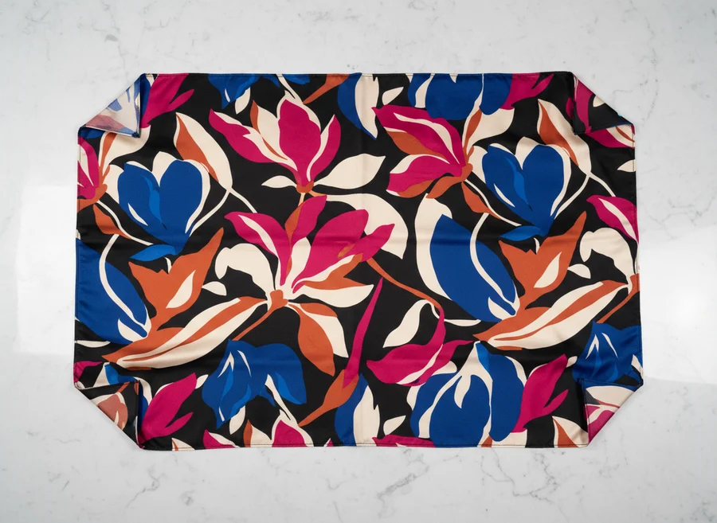
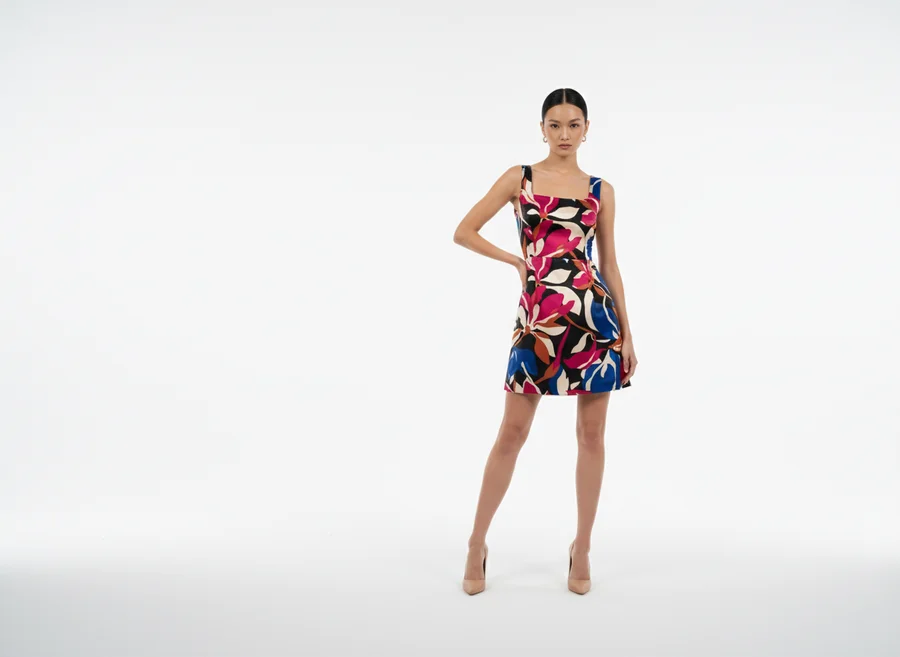

Ürünü yükle
Düz zeminde çekilmiş tek bir kıyafet fotoğrafı yeter. Kumaş dokusu, desen ve kıvrımlar render boyunca korunur.

AI MODA STÜDYOSU · iOS & Android
Kıyafeti AI mankene giydir, kombin sahnesi kur, kumaştan tam giysi üret ve dikey moda videosu çıkar. Stüdyo, manken ve fotoğrafçı kiralamadan, telefonundan.
Kredi kartı gerekmez · Görselleriniz model eğitiminde kullanılmaz
ÜRÜN
 AI ÇEKİM
AI ÇEKİM
aktif satıcı
moda modülü
video şablonu
store puanı (45 yorum)
TEK AKIŞTA
Moda Auto Video bu beş adımı sizin yerinize kurar. Aşağı kaydırın, her adımı görün.
Düz zeminde çekilmiş tek bir kıyafet fotoğrafı yeter. Kumaş dokusu, desen ve kıvrımlar render boyunca korunur.
Hazır galeriden seç, kendi fotoğrafını kullan ya da AI ile üret. Her yaş, her ten; 10'dan fazla editoryal poz.

Stüdyo, iç mekân, dış mekân ya da kendi arka planın. Tek sahnede dokuz ürüne kadar kombin yerleştir.

Klibe uygun müzik otomatik eşlenir. Çıktı Reels ve TikTok için dikey formatta hazırlanır.

Catwalk, Try-On Loop, Cinematic ve 90'dan fazla şablon arasından seç. Pro planda yüz referansı ile kendi yüzünü kullan.
KUMAŞ VİZYONU
Bir kumaş parçasının fotoğrafından elbise, gömlek, pantolon ya da etek render edin. Doku ve desen birebir korunur. Tutamacı sürükleyip karşılaştırın.


KUMAŞ GİYSİ11 MODÜL, TEK UYGULAMA
← yana kaydır →

Üst, alt, dış giyim, elbise, ayakkabı. Dengeli ya da kalite modu, 1–4 varyasyon, 4K'ya kadar.

14 aksesuar tipi: saat, çanta, gözlük, küpe, kolye ve daha fazlası. Luxury, Casual, Editorial, Minimal temalar.

Tek sahnede 9 ürüne kadar. Manken hazır galeriden, kendi fotoğrafından ya da AI üretimi; stüdyo veya kendi arka planın.

Koleksiyonel outfit kombinleri. Serbest metinle sahne yönergesi verin, 1–4 varyasyon alın.

Kumaş yakın çekiminden tam giysi render. Doku ve desen korunur: elbise, gömlek, pantolon, etek.

Hazır galeri, kendi fotoğrafın ya da AI üretimi. Her yaş, her ten; 10'dan fazla editoryal poz.

Tek kareden çoklu poz üretin. Aynı kıyafet, farklı duruşlar, tek triptik çıktı.
Çıktıyı pazaryerine taşıyın. Otomatik sütun eşleme ile CSV ve XLSX dışa aktarım.
← yana kaydır →
MODA AUTO VIDEO
Ürün, manken, sahne ve müzik tek akışta birleşip 15 saniyelik dikey klibe dönüşür. 90'dan fazla şablon: Catwalk, Try-On Loop, Fabric Close-Up, Editorial, Street, Cinematic.
GÖRSELLERİNİZ SİZİN
Tüm görselleriniz kendi Firebase Storage alanınızda şifreli olarak saklanır. Üretim sizin; veriniz size kalır.
Trendyol vitrinimi tek başıma çekemiyordum. Şimdi bir kıyafetin ürün fotoğrafından mankenli görseli çıkıyor, aynı gün listeliyorum.
Laleli'de toptan satıyoruz, her sezon yüzlerce parça. Kombin modunda tek sahneye birden çok ürün koyabilmek bizim için işi gerçekten hızlandırdı.
Instagram için video çekmek en zorlandığım kısımdı. Auto Video ile ürünü yüklüyorum, 15 saniyelik dikey klip hazır geliyor. Reels paylaşımım düzene girdi.
PLANLAR
Detaylı fiyatlandırma uygulamada. Hediye kredi ile ücretsiz dene, kart yok.
İlk çekimlerini yapmaya başla.
Düzenli üreten satıcılar için.
Yüksek hacimli atölye ve mağazalar için.
Detaylı fiyatlandırma uygulamada görüntülenir.
Sanal deneme yaklaşık 30 saniye sürer. Çözünürlüğe ve seçtiğiniz moda (dengeli / kalite) moduna göre değişebilir.
Hayır. Hazır manken galerisinden seçebilir, kendi fotoğrafınızı kullanabilir ya da AI ile manken üretebilirsiniz. Her yaş ve ten tonu, 10'dan fazla editoryal poz mevcut.
Evet. Sanal denemede kumaş dokusu ve kıvrımlar korunur. Kumaş Vizyonu modülünde ise yakın çekimden tam giysiye geçerken doku ve desen birebir aktarılır.
Evet. Trendyol, Shopify, Amazon, Etsy, Hepsiburada, N11 ve WooCommerce için CSV ve XLSX dışa aktarım var; sütunlar otomatik eşlenir.
Görselleriniz kendi Firebase Storage alanınızda şifreli olarak saklanır ve model eğitiminde kullanılmaz.
Evet. Hediye kredi ile kredi kartı olmadan başlayabilirsiniz. Detaylı fiyatlandırma uygulamada görüntülenir.
iOS ve Android'de. Hediye kredi ile ücretsiz dene, kart gerekmez.